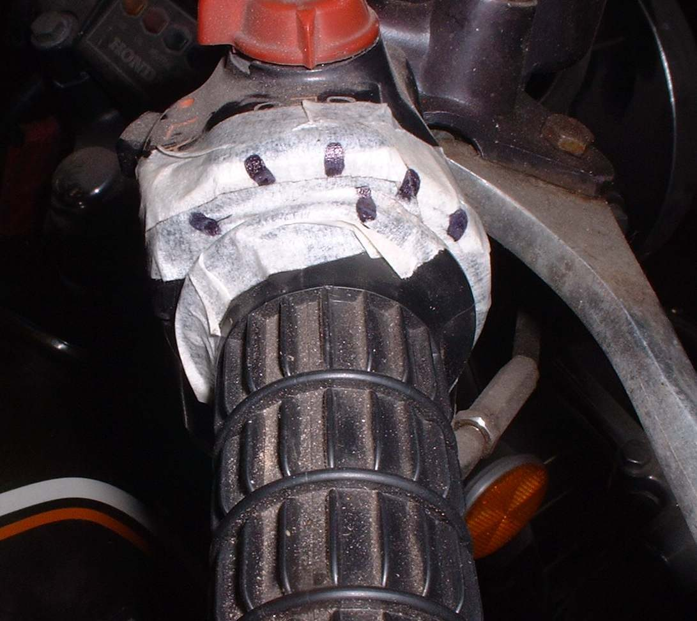

On a fuel-injected bike the throttle body takes the place of the carburettor. It is a short metal tube with a flat butterfly valve inside, turned by the throttle cable. It carries the throttle position sensor and often an idle air motor (stepper), and usually holds the injector or sits next to it.
What it does
Opening the throttle turns the butterfly and lets more air in. The ECU reads how far it is open and how much air flows, then sets the fuel. At idle the butterfly is almost shut and the idle motor lets a small, controlled amount of air past it. Oil vapour from the breather and dust leave a sticky black film that upsets the idle.
Signs it is worn or failing
- Unstable idle after cleaning or battery disconnection.
- Stalls at idle, hunting idle or high idle.
- Throttle sticks from a dirty spindle.
- Engine warning light with a TPS or idle motor code.
When to replace it
Rarely. Clean it first. Replace when the spindle is worn loose, the butterfly is damaged, or a sensor or idle motor fails and is not sold separately.
What to match when buying
- Match the code cast or stamped on the body (K-Light 125: "30C-21") and the bore size. A body from another model can have a different sensor, idle motor or cable pulley.
- Check whether the price includes the throttle position sensor and idle motor.
- Buy new O-rings and the intake rubber if it is cracked.
Fitting notes
- Home job to clean: Clean the throttle body. Do not spray cleaner into the sensor or motor, and do not prop the butterfly open with a tool.
- Do not turn the factory idle stop screw.
- After cleaning or fitting, the ECU may need its idle reset: Reset the idle after throttle body work. Check throttle free play.
Reference (K-Light 125)
| Item | Value | PDF page |
|---|---|---|
| Throttle body code | 30C-21 | 19 |
| Cleaning interval | every 10000 km or 1 year | 274 |
| Idle speed | 1500 ± 100 rpm | 19 |
| Idle stepper coils A-B and C-D | 50 Ω ± 10 % at 20 to 30 °C | 266 |